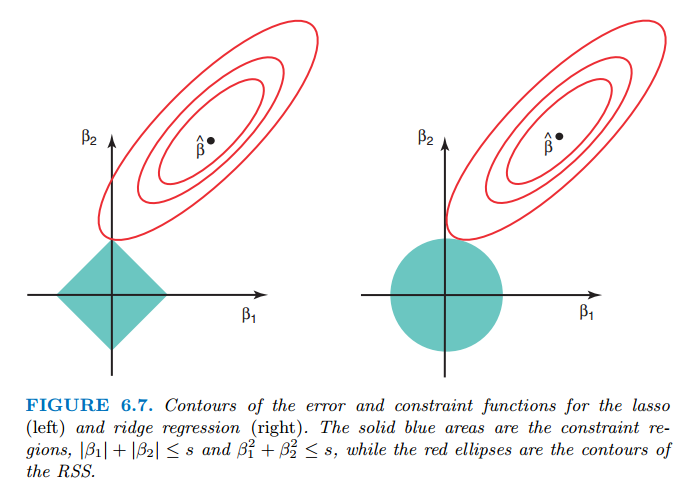
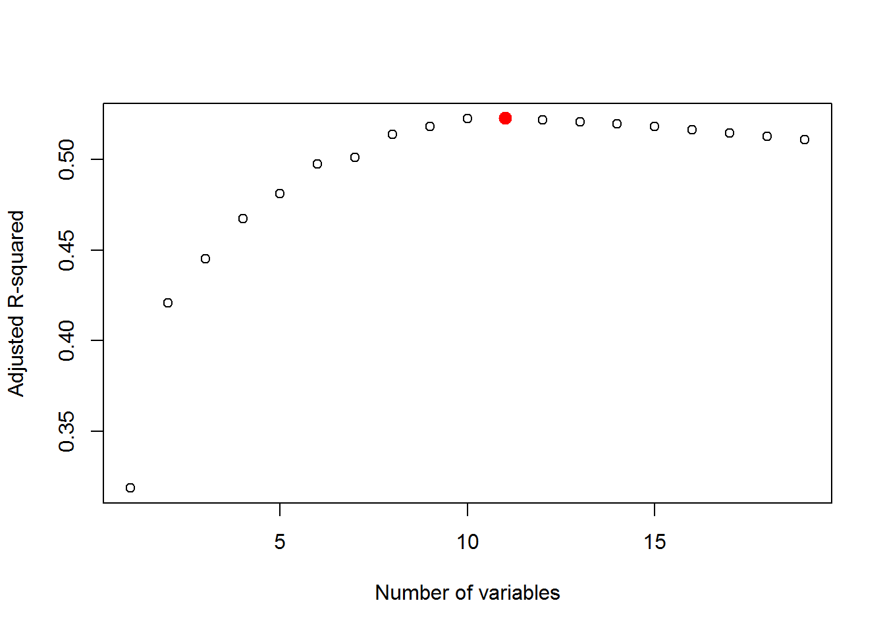
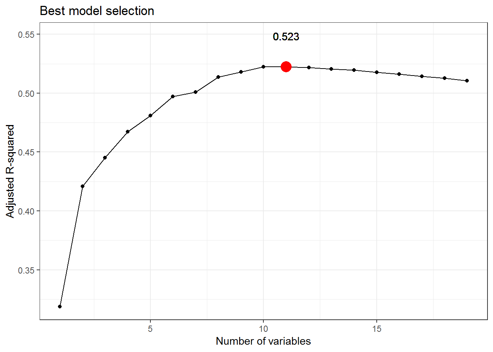
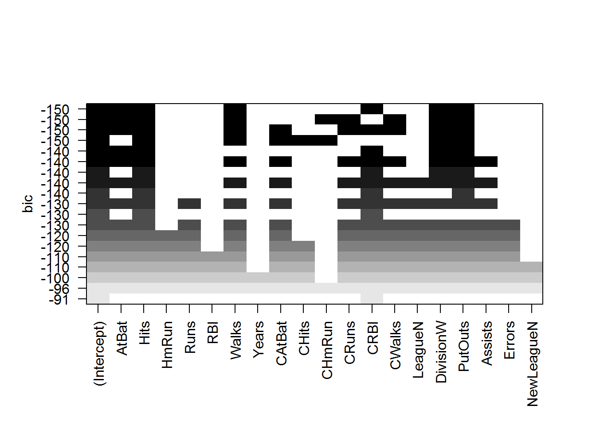

8. Regularization¶
8.1. Giới thiệu¶
Mô hình OLS có nhiều ưu điểm, tuy nhiên OLS gặp các vấn đề sau:
- Độ chính xác: OLS ít bị biến thiên (variance) khi \(n \gg p\), nghĩa là số lượng quan sát lớn hơn rất nhiều so với số biến. Tuy nhiên, nếu n không lớn hơn nhiều so với p, mô hình sẽ gặp phải vấn đề “overfitting” và “bias”. Nếu \(p \succ n\), sẽ có nhiều giá trị ước lượng của tham số, variance của mô hình sẽ rất lớn. Để xử lý vấn đề này, ta có thể sử dụng kỹ thuật “constraining” hoặc “shrinking” các tham số ước lượng
- Khả năng giải thích ý nghĩa mô hình: Một số biến không ảnh hưởng đến mô hình nhưng với OLS, các giá trị ước lượng tham số luôn lớn hơn 0. Để mô hình gần với thực tế hơn (giảm bias), ta sử dụng kỹ thuật “variable selection” (hay feature selection) để loại bỏ các biến không phù hợp trong mô hình.
Ba phương pháp sử dụng:
- Subset selection: Phương pháp này xác định tập giá trị của p mà ta tin rằng có liên quan đến biến phụ thuộc, sau đó sử dụng OLS để giảm tập biến
- Shrinkage: Còn được gọi là regularization có tác dụng giảm variance của mô hình. Phương pháp này sử dụng tất cả các biến và cho phép ước lượng coefficient có giá trị bằng 0, do đó được dùng trong “variable selection”
- Dimension Reduction: Giảm p biến thành không gian M chiều với \(M \prec p\), trong đó có M tổ hợp tuyến tính của biến. Các giá trị này được sử dụng để dự báo biến phụ thuộc y
8.2. Subset Selection¶
8.2.1. Best subset selection¶
Thuật toán này cho phép lựa chọn mô hình có số biến phụ thuộc tối ưu bằng việc xây dựng rất nhiều mô hình và chọn ra từ đó mô hình có RSS thấp nhất.
Các bước thực hiện:
- Gọi \(M_0\) là mô hình ban đầu (null model). Mô hình này không có biến độc lập, dự báo giá trị Y bằng giá trị trung bình của tập train
- Với k=1..p:
- Xây dựng \((\stackrel{p}{k})\) mô hình với đúng k biến độc lập
- Lựa chọn từ mô hình gọi là \(M_k\) với RSS có giá trị nhỏ nhất
- Chọn các mô hình \(M_0,...,M_k\) bằng cross validation bằng các tiêu chí AIC, BIC hoặc \(\overline{R}^2\)
Ghi chú:
- Subset selection lựa chọn mô hình tốt nhất từ \(2^p\) mô hình. Trong bước 2, ta đã giảm việc lựa chọn cross validation từ \(2^p\) xuông p+1 mô hình
- Phải xây dựng rất nhiều mô hình, điều này có thể khiến quá trình phân tích tốn nhiều thời gian
###Stepwise selection ####Forward stepwise selection
Các bước thực hiện:
- Xây dựng null model không chưa biến độc lập
- Thêm ĐÚNG 1 biến độc lập, lựa chọn mô hình có RSS nhỏ nhất, gọi là mô hình \(M_1\)
- Lặp lại bước 2 cho đến khi tất cả các biến đều được đưa vào mô hình, mô hình có tất cả các biến là \(M_p\)
- Lựa chọn mô hình tốt nhất của \(M_0,...,M_p\) bằng cross validation
Ví dụ: Mô hình có 3 biến \(X_1\), \(X_2\), \(X3\), biến phụ thuộc là Y, ta thực hiện như sau:
- Gọi null model \(M_0\) không chưa biến độc lập
- Lựa chọn \(M_1\) là mô hình CHỈ chưa MỘT biến độc lập (cách thực hiện: Xây dưng 3 mô hình với lần lượt từng biến, chọn mô hình có RSS thấp nhât), giả sử là mô hình chỉ chưa biến \(X_1\)
- Lặp lại bước 2, xây dụng 2 mô hình bằng cách thêm lần lượt \(X_2\), \(X_3\) vào mô hình 2
- Thực hiện cross validation để cọn mô hình tốt nhất
:
- Mô hình này giảm đáng kể số lượng mô hình. Tổng số mô hình được xây dựng là \(1+\frac{p(p+1)}{2}\)
- Phương pháp này không đảm bảo lựa chọn được mô hình tốt nhất từ
\(2^p\) mô hình. VD: Mô hình có 3 biến
\(X_1\),…,\(X_3\), ta có:
- Mô hình 1 biến tốt nhất là mô hình với \(X_1\)
- Mô hình 2 biến tốt nhất là mô hình với \(X_2\) và \(X_3\)
- Phương pháp stepwise selection, mô hình 2 biến tốt nhất là \(X_1\) và \(X_2\)
####Backward stepwise selection
Phương pháp này ngược lại với forward stepwise, xây dựng mô hình full, sau đó giảm biến lần lượt
Phương pháp chọn mô hình tốt nhất:
- Phương pháp gián tiếp: Ước lượng sai số của test error bằng cách điều chỉnh các tiêu chí dựa vào biến. VD: AIC, BIC, Adjusted-R-squared
- Phương pháp trực tiếp: Ước lượng trực tiếp dựa trên cross validation
##Shrinkage methods ###Ridge regression
Hàm mục tiêu của OLS là tối thiểu hóa RSS:
Ridge regression tương tự như OLS, tuy nhiên hàm mục tiêu là tối thiểu hóa hàm sau
Ghi chú:
- \(\lambda\sum\beta_j^2\) được gọi là shrinkage penalty. Giá trị này sẽ nhỏ khi \(\beta_j\) tiến gần đến 0
- \(\lambda \geq 0\) được gọi là tuning parameter
- Với \(\lambda = 0\), ridge regression trở thành OLS
- Việc lựa chọn giá trị của \(\lambda\) rất quan trọng với ridge regression
- Giá trị \(\beta_j\) không bị đánh penalty, giá trị này chính là giá trị trung bình của biến y khi các biến khác bằng 0
Ridge regression tốt hơn OLS tuân theo quy luận bias-variance trade-off
###Lasso regression
Ridge regression có nhược điểm là không đưa các giá trị ước lượng của biến về 0 mà chỉ tiệm cận 0. Lasso khắc phục nhược điểm đó bằng việc thay đổi hàm mục tiêu như sau:
Minimize \(RSS + \lambda(\sum_{j=1}^p|\beta_j|)\)
Ghi chú: Lasso còn được sử dụng là subset selection
Cách tiếp cận khác của Ridge và Lasso
Mô hình Ridge và Lasso có thể được viết lại như sau:
Minimize \(RSS\), subject to:
- \(\sum_{j=1}^p|\beta_j| \leq s\), với Lasso regression
- \(\sum_{j=1}^p\beta_j^2 \leq s\), với Ridge regression
Do đó, Ridge regression chỉ cho phép các giá trị của tham số tiệm cận 0
###Lựa chọn tuning parameter

Lưu ý: Lasso cho phép mô hình có tính giải thích tốt hơn do số lượng predictor ít hơn. Tuy nhiên, với 1 số trường hợp, khi mối quan hệ giữa các biến (\(\beta\)) gần bằng 0, mô hình Ridge sẽ tốt hơn
8.3. Ví dụ thực tế¶
8.3.1. Best subset selection¶
library(ISLR)
library(dplyr)
library(ggplot2)
#Xử lý số liệu
names(Hitters)
## [1] "AtBat" "Hits" "HmRun" "Runs" "RBI"
## [6] "Walks" "Years" "CAtBat" "CHits" "CHmRun"
## [11] "CRuns" "CRBI" "CWalks" "League" "Division"
## [16] "PutOuts" "Assists" "Errors" "Salary" "NewLeague"
#Loại bỏ giá trị bị thiếu
data <- na.omit(Hitters)
is.na(data) %>% sum
## [1] 0
dim(data)
## [1] 263 20
library(leaps)
#Xây dựng mô hình
regfit.full <- regsubsets(Salary ~ ., data, nvmax = 19)
reg.summary <- regfit.full %>% summary
names(reg.summary)
## [1] "which" "rsq" "rss" "adjr2" "cp" "bic" "outmat" "obj"
reg.summary$adjr2 %>% which.max
## [1] 11
#Biểu đồ đơn giản
plot(reg.summary$adjr2, xlab="Number of variables", ylab = "Adjusted R-squared")
points (11,reg.summary$adjr2[11], col="red",cex=2,pch=20)

#Biểu đồ với GGPLOT2
reg.summary2 <- data.frame(
nr = seq(1:19),
adjr2 = reg.summary$adjr2,
bic = reg.summary$bic
)
ggplot(reg.summary2, aes(nr, y = adjr2)) + geom_point() + geom_line() +
geom_point(aes(x=which.max(adjr2), y = max(adjr2)), col = "red", size =5) +
geom_text(aes(x=which.max(adjr2), y = 1.05*max(adjr2)),
label = reg.summary2$adjr2 %>% max %>% round(3)) +
theme_bw() +
xlab("Number of variables") +
ylab("Adjusted R-squared") +
ggtitle("Best model selection")

#####
plot(regfit.full ,scale="bic")

#Xem coef của mô hình
coef(regfit.full,11)
## (Intercept) AtBat Hits Walks CAtBat
## 135.7512195 -2.1277482 6.9236994 5.6202755 -0.1389914
## CRuns CRBI CWalks LeagueN DivisionW
## 1.4553310 0.7852528 -0.8228559 43.1116152 -111.1460252
## PutOuts Assists
## 0.2894087 0.2688277
8.3.2. Stepwise methods¶
lapply(c("ISLR","leaps"), library, character.only = T)
## [[1]]
## [1] "leaps" "ggplot2" "dplyr" "ISLR" "methods"
## [6] "stats" "graphics" "grDevices" "utils" "datasets"
## [11] "base"
##
## [[2]]
## [1] "leaps" "ggplot2" "dplyr" "ISLR" "methods"
## [6] "stats" "graphics" "grDevices" "utils" "datasets"
## [11] "base"
regfit.fwd <- regsubsets(Salary∼.,data=data ,nvmax=19,method ="forward")
regfit.fwd %>% summary
## Subset selection object
## Call: regsubsets.formula(Salary ~ ., data = data, nvmax = 19, method = "forward")
## 19 Variables (and intercept)
## Forced in Forced out
## AtBat FALSE FALSE
## Hits FALSE FALSE
## HmRun FALSE FALSE
## Runs FALSE FALSE
## RBI FALSE FALSE
## Walks FALSE FALSE
## Years FALSE FALSE
## CAtBat FALSE FALSE
## CHits FALSE FALSE
## CHmRun FALSE FALSE
## CRuns FALSE FALSE
## CRBI FALSE FALSE
## CWalks FALSE FALSE
## LeagueN FALSE FALSE
## DivisionW FALSE FALSE
## PutOuts FALSE FALSE
## Assists FALSE FALSE
## Errors FALSE FALSE
## NewLeagueN FALSE FALSE
## 1 subsets of each size up to 19
## Selection Algorithm: forward
## AtBat Hits HmRun Runs RBI Walks Years CAtBat CHits CHmRun CRuns
## 1 ( 1 ) " " " " " " " " " " " " " " " " " " " " " "
## 2 ( 1 ) " " "*" " " " " " " " " " " " " " " " " " "
## 3 ( 1 ) " " "*" " " " " " " " " " " " " " " " " " "
## 4 ( 1 ) " " "*" " " " " " " " " " " " " " " " " " "
## 5 ( 1 ) "*" "*" " " " " " " " " " " " " " " " " " "
## 6 ( 1 ) "*" "*" " " " " " " "*" " " " " " " " " " "
## 7 ( 1 ) "*" "*" " " " " " " "*" " " " " " " " " " "
## 8 ( 1 ) "*" "*" " " " " " " "*" " " " " " " " " "*"
## 9 ( 1 ) "*" "*" " " " " " " "*" " " "*" " " " " "*"
## 10 ( 1 ) "*" "*" " " " " " " "*" " " "*" " " " " "*"
## 11 ( 1 ) "*" "*" " " " " " " "*" " " "*" " " " " "*"
## 12 ( 1 ) "*" "*" " " "*" " " "*" " " "*" " " " " "*"
## 13 ( 1 ) "*" "*" " " "*" " " "*" " " "*" " " " " "*"
## 14 ( 1 ) "*" "*" "*" "*" " " "*" " " "*" " " " " "*"
## 15 ( 1 ) "*" "*" "*" "*" " " "*" " " "*" "*" " " "*"
## 16 ( 1 ) "*" "*" "*" "*" "*" "*" " " "*" "*" " " "*"
## 17 ( 1 ) "*" "*" "*" "*" "*" "*" " " "*" "*" " " "*"
## 18 ( 1 ) "*" "*" "*" "*" "*" "*" "*" "*" "*" " " "*"
## 19 ( 1 ) "*" "*" "*" "*" "*" "*" "*" "*" "*" "*" "*"
## CRBI CWalks LeagueN DivisionW PutOuts Assists Errors NewLeagueN
## 1 ( 1 ) "*" " " " " " " " " " " " " " "
## 2 ( 1 ) "*" " " " " " " " " " " " " " "
## 3 ( 1 ) "*" " " " " " " "*" " " " " " "
## 4 ( 1 ) "*" " " " " "*" "*" " " " " " "
## 5 ( 1 ) "*" " " " " "*" "*" " " " " " "
## 6 ( 1 ) "*" " " " " "*" "*" " " " " " "
## 7 ( 1 ) "*" "*" " " "*" "*" " " " " " "
## 8 ( 1 ) "*" "*" " " "*" "*" " " " " " "
## 9 ( 1 ) "*" "*" " " "*" "*" " " " " " "
## 10 ( 1 ) "*" "*" " " "*" "*" "*" " " " "
## 11 ( 1 ) "*" "*" "*" "*" "*" "*" " " " "
## 12 ( 1 ) "*" "*" "*" "*" "*" "*" " " " "
## 13 ( 1 ) "*" "*" "*" "*" "*" "*" "*" " "
## 14 ( 1 ) "*" "*" "*" "*" "*" "*" "*" " "
## 15 ( 1 ) "*" "*" "*" "*" "*" "*" "*" " "
## 16 ( 1 ) "*" "*" "*" "*" "*" "*" "*" " "
## 17 ( 1 ) "*" "*" "*" "*" "*" "*" "*" "*"
## 18 ( 1 ) "*" "*" "*" "*" "*" "*" "*" "*"
## 19 ( 1 ) "*" "*" "*" "*" "*" "*" "*" "*"
coef(regfit.fwd,2)
## (Intercept) Hits CRBI
## -47.9559022 3.3008446 0.6898994
coef(regfit.full,2)
## (Intercept) Hits CRBI
## -47.9559022 3.3008446 0.6898994
Lưu ý: Với số lượng biến nhỏ, mô hình best selection và stepwise đưa ra kết quả tương tự nhau
8.3.3. Ridge & Lasso¶
library(glmnet)
library(ISLR)
library(dplyr)
library(ggplot2)
data("Hitters")
x <- model.matrix(Salary∼., Hitters)[,-1]
y <- Hitters$Salary
#Hàm model.matrix cho phép chuyển biến categorical sang dummies